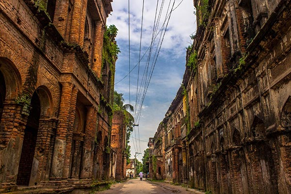

Narayanganj is a city in central Bangladesh. It is in the Narayanganj District, about 16 km (10 mi) southeast of the capital city of Dhaka, and has a population of about 2 million. It is the 6th largest city in Bangladesh. It is also a center of business and industry, especially the jute trade and processing plants, and the textile sector of the country. It is nicknamed the Dundee of Bangladesh due to the presence of its many jute mills. (Dundee was the first industrialised 'Juteopolis' in the world)
 About Narayanganj